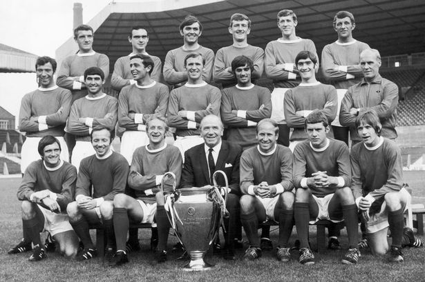

Манчестър Юнайтед е клуб със над 130 години история
Първа европейска титлаМанчестър Юнайтед е футболен клуб от град Манчестър, Англия. Домакинските си мачове отборът играе на стадион Олд Трафорд. Основан като футболен клуб Нютън Хийт през 1878 г., клубът променя името си на Манчестър Юнайтед през 1902 г. и се премества в Олд Трафорд през 1910 година.
